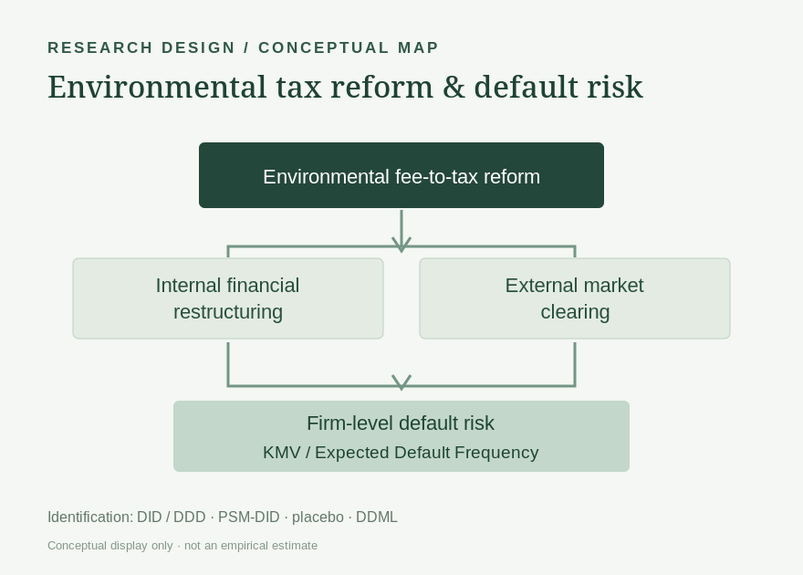
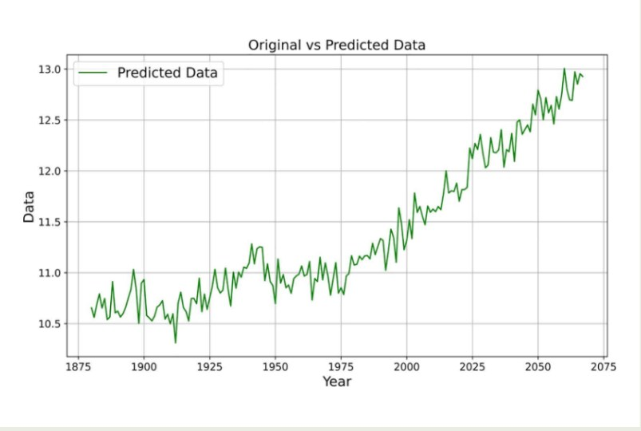
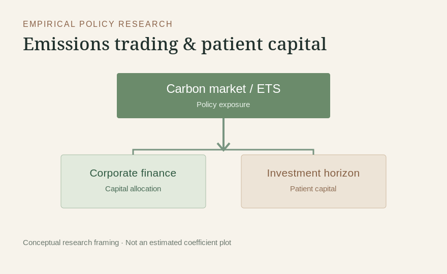

Research & project details.
Each project is presented once with an explicit research question, actual work and role attribution. For published articles, the DOI links provide the authoritative record.
Corporate credit risk & environmental tax reform
Constructed a KMV-based expected default frequency measure and evaluated the 2018 environmental fee-to-tax reform using firm-level panel data. Extended the study from DID to DDD and examined restructuring and market-clearing mechanisms.
Research question
How does stronger environmental regulation reshape corporate default risk?
Constructed a KMV-based expected default frequency measure and evaluated the 2018 environmental fee-to-tax reform using firm-level panel data. Extended the study from DID to DDD and examined restructuring and market-clearing mechanisms.
My specific contributions
- Framed the research question, constructed risk measures and prepared firm-panel data.
- Implemented fixed-effects models, parallel-trend and placebo tests, endogeneity and robustness checks, and mechanism analysis.
- Extended the design to DDD and DDML and developed the manuscript and research figures.
The extended first-author manuscript is submitted; it is not described as accepted or published.

Consumer review intelligence with BERT–BiLSTM–CNN
Analysed text preprocessing, review classification, sentiment, keywords and human–machine review detection, followed by independent reproduction of core Transformer workflows.
Research question
How can unstructured reviews be converted into reliable decision signals?
Analysed text preprocessing, review classification, sentiment, keywords and human–machine review detection, followed by independent reproduction of core Transformer workflows.
My specific contributions
- Led interpretation and manuscript development across four text-analysis tasks.
- Connected model evaluation to consumer-facing implications.
- Independently reproduced core transformer-based NLP workflows in Python afterward.
The ≈92% metric is a project-reported result, not a claim of independent production validation.
Global temperature forecasting with LSTM & ARIMA
Modelled global temperature dynamics from 1880–2022, integrating neural and statistical time-series approaches with environmental interpretation.
Research question
What can complementary forecasting models reveal about long-term temperature trends?
Modelled global temperature dynamics from 1880–2022, integrating neural and statistical time-series approaches with environmental interpretation.
My specific contributions
- Implemented forecasting software and analysed 1880–2022 global temperature data using LSTM and ARIMA within the co-authored study.
- Used Pearson and Spearman correlations to examine associations between greenhouse gases and temperature, including pandemic-period patterns. These analyses do not isolate a causal pandemic effect.
- Connected the quantitative results with environmental-management questions and contributed original drafting and revision, keeping model projections distinct from observed changes.
The published contribution statement credits data curation, formal analysis, investigation, resources, software, original drafting and revision. Methodology is credited to Junyi Zhong. Forecasting and correlation do not establish causal effects.

Risk analytics with ARIMA & XGBoost
Studied flight-operation risk with anomaly detection, time-series modelling and XGBoost classification to inform early-warning analysis.
Research question
Can time-series features and supervised learning identify operational risk patterns?
Studied flight-operation risk with anomaly detection, time-series modelling and XGBoost classification to inform early-warning analysis.
My specific contributions
- Coordinated statistical analysis and interpretation across aviation QAR variables.
- Translated model results into an early-warning research narrative and technical report.
- Independently reproduced XGBoost workflows in Python later.
Carbon markets & corporate patient capital
Investigated whether emissions trading may alter long-horizon capital allocation in pollution-intensive enterprises, using empirical policy evaluation and event-study evidence.
Research question
Can an environmental market mechanism unintentionally affect patient capital?
Investigated whether emissions trading may alter long-horizon capital allocation in pollution-intensive enterprises, using empirical policy evaluation and event-study evidence.
My specific contributions
- Developed research synthesis, empirical-analysis narrative and manuscript as first author.
- Connected environmental policy to corporate financing and investment behaviour.
- Prepared empirical figures and robustness evidence for the working manuscript.
The manuscript is submitted and not yet a published article.

Healthcare investment efficiency in China
Contributed to a national healthcare efficiency study using ten years of healthcare inputs and outputs, DEA-based efficiency analysis and Origin visualisation.
Research question
How efficiently are healthcare resources transformed into measurable outcomes?
Contributed to a national healthcare efficiency study using ten years of healthcare inputs and outputs, DEA-based efficiency analysis and Origin visualisation.
My specific contributions
- Supported input–output indicator framework and DEA analysis on 2012–2021 healthcare data.
- Prepared figures and quantitative evidence using Origin.
- Contributed as third author; not portrayed as research lead.
Neural dynamics & hyperspectral detection
Contributed literature synthesis, mathematical-method screening and research communication for neural-dynamics work; co-inventor on a granted hyperspectral detection patent.
Research question
How can unfamiliar mathematical methods be learned, evaluated and translated into research?
Contributed literature synthesis, mathematical-method screening and research communication for neural-dynamics work; co-inventor on a granted hyperspectral detection patent.
My specific contributions
- Assisted literature review, method screening, figure preparation, manuscript and patent documentation.
- Developed working knowledge of ACGND dynamic tensor inversion research.
- Patent co-inventor; not claiming primary algorithm authorship.
Consumer analytics & field research
Combined 434 valid questionnaires and first-hand field research with online review mining and satisfaction analysis to produce evidence-based recommendations.
Research question
How can quantitative surveys and real consumer behaviour inform management decisions?
Combined 434 valid questionnaires and first-hand field research with online review mining and satisfaction analysis to produce evidence-based recommendations.
My specific contributions
- Led research framing, survey coordination, analytical integration and final reporting.
- Used survey-based and text-based evidence to identify consumer experience gaps.
- Produced quantitative analysis and practical market recommendations.
AI-enabled agritech: from R&D to business use
Translated a technical team’s AI-based pest recognition and early-warning system into field-tested product concepts, financial models, customer research and commercial strategy.
Research question
How can promising AI-enabled technology become a viable product in a real market?
Translated a technical team’s AI-based pest recognition and early-warning system into field-tested product concepts, financial models, customer research and commercial strategy.
My specific contributions
- Led market research, product positioning, pricing, business-model design and financial forecasts.
- Coordinated grower visits, field validation, stakeholder feedback, external partners and commercial partnerships.
- Worked with technical collaborators to translate team-developed technology into product plans; business and finance were my main responsibilities.
Intelligent seedling system: business & finance
Supported team-developed automated cultivation equipment through commercial strategy, independent financial planning and partnership execution.
Research question
Supported team-developed automated cultivation equipment through commercial strategy, independent financial planning and partnership execution.
My specific contributions
- Independently built budgets, cost and revenue models, financial forecasts and investment-appraisal analysis.
- Coordinated five purchase orders and led the business workstream, including delegation, review and project delivery.
Reported equipment sales are team outcomes; financial-plan projections are not realised revenue.
Golden Pomfret value-chain venture
Connected aquaculture field research with consumer needs, product strategy, commercial partnerships and rural value-chain development.
Research question
Connected aquaculture field research with consumer needs, product strategy, commercial partnerships and rural value-chain development.
My specific contributions
- Conducted 10+ rounds of field research with communities, enterprises and other stakeholders.
- Co-developed market positioning, product concepts, business plans and financial analysis, and supported purchase agreements.
3D modelling cloud platform
Contributed product planning, UI collaboration and platform testing for photo-based modelling and cloud processing.
Research question
Contributed product planning, UI collaboration and platform testing for photo-based modelling and cloud processing.
My specific contributions
- Translated requirements into product planning and collaborated on the proposed interface.
- Tested the platform and supported the cross-disciplinary project’s delivery.
Financial information storage device
Developed a finance-workflow product concept with engineering collaborators.
Research question
Developed a finance-workflow product concept with engineering collaborators.
My specific contributions
- Proposed the initial functional concept and collaborated on design.
- Helped prepare patent documentation; the university is the patent holder.
Inclusive tennis & accessibility platform
Combined direct engagement with coaches and Deaf or hard-of-hearing participants with financial planning and platform collaboration.
Research question
Combined direct engagement with coaches and Deaf or hard-of-hearing participants with financial planning and platform collaboration.
My specific contributions
- Conducted on-site research and community outreach to understand practical participation needs.
- Independently prepared financial analysis, funding plans, risk assessment and development proposals; collaborated on platform planning.
Fishermen’s livelihood resilience
Translated learning, buffering and self-organisation capacities into a dynamic model of fishing-community resilience under disaster and policy scenarios.
Research question
Translated learning, buffering and self-organisation capacities into a dynamic model of fishing-community resilience under disaster and policy scenarios.
My specific contributions
- Built a system-dynamics research framework under undergraduate-supervisor guidance.
- Used Vensim to model feedback relationships and simulate alternative capacity and policy scenarios.
Marine-heritage research: bibliometric mapping
Mapped two decades of research on China’s marine intangible cultural heritage using CNKI, Wanfang and VIP records.
Research question
Mapped two decades of research on China’s marine intangible cultural heritage using CNKI, Wanfang and VIP records.
My specific contributions
- Reviewed the literature and mapped keywords, institutions and evolving research clusters.
- Synthesised research on heritage preservation, rural revitalisation and digital approaches into a manuscript.
Multi-indicator early-warning analysis
Integrated country-level indicators into a scoring and forecasting framework for a modelling competition.
Research question
Integrated country-level indicators into a scoring and forecasting framework for a modelling competition.
My specific contributions
- Collected, combined and preprocessed multi-source data.
- Worked with modelling teammates on TOPSIS, LASSO and LSTM interpretation, and led the research report and English version.
Retail pricing & replenishment optimisation
Linked historical sales, demand forecasts and constrained optimisation to fresh-food pricing and stocking decisions.
Research question
Linked historical sales, demand forecasts and constrained optimisation to fresh-food pricing and stocking decisions.
My specific contributions
- Participated in the collaborative quantitative modelling study and technical submission.
The source does not separate a more specific individual role. Profit and assortment values are scenario results.
Need more detail?
Unpublished manuscripts, working-paper figures and certain supporting project documents can be shared in an appropriate academic context upon request.